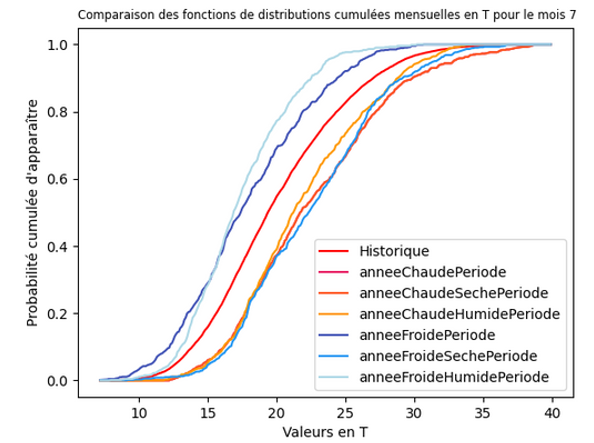
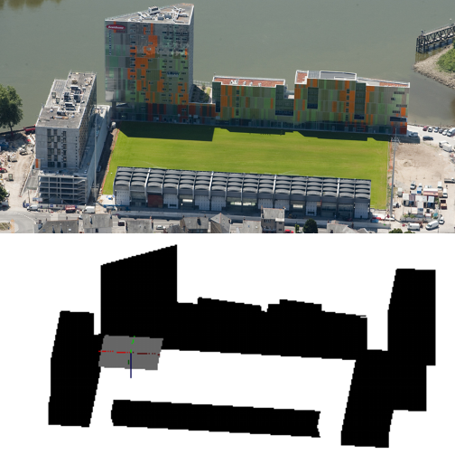
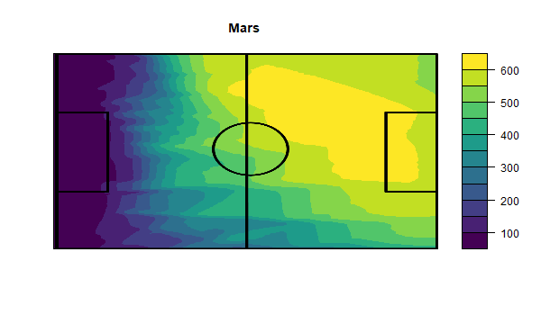

CDD à l’INRAE
Ce CDD s’est déroulé au sein de l’unité URP3F du centre INRAE de Nouvelle-Aquitaine Poitiers, à Lusignan (France). Ce contrat s’inscrit dans la continuité de mon stage de BUT2, dont l’objectif était de mettre en place et tester des méthodes statistiques permettant de résumé les caractéristiques d’un climat en une seule année représentative. Ces méthodes se nomment les années typiques météorologiques.
Après avoir produit des données météorologiques représentatives du climat de Lusignan, de nouvelles méthodes furent explorées durant ce contrat afin d’essayer de produire des années extrêmes météorologiques. Le travail bibliographique a mené à la sélection de 4 méthodes qui furent reproduites dans un script Python.
La seconde partie du contrat consistait à produire des scripts R permettant d’automatiser le calcul d’indicateur microclimatique, permettant de décrire les conditions météorologiques d’une zone. Pour cela, j’avais à disposition un rapport bibliographique indiquant les formules usuellement utilisées. Ces dernières ont alors été codée sous la forme de fonctions afin de faciliter leur utilisation. Ceci permettrait par la suite de pouvoir analyser plus en détail la précision et les caractéristiques des années typiques météorologiques.
La dernière mission effectuée durant ce contrat a consisté à préparer et optimiser des scripts servant à analyser l’arrivée et la concentration de rayonnement solaire sur une surface. Le contexte était de simuler la répartition de rayonnement solaire arrivant sur la pelouse du stade Marcel Saupin de Nantes (France). Ceci a alors nécessité de reproduire une maquette 3D du stage au format VGX à partir de plans. Pour réaliser la simulation, un script Python déjà existant était utilisé et a été optimisé en implémentant du Multi-Threading. A l’origine, la dernière étape de la simulation se faisait sur un script MatLab, mais ce dernier a dû être converti en un script R afin de tirer parti de son efficacité sur des calculs matriciels.
Compétences acquises :
- Utilisation de Python et de R
- Apprentissage des principes du Multi-Threading en Python
- Recherche bibliographique
- Maintenance et optimisation d’un script
- Développement d’indicateurs statistiques climatiques
Illustrations

Courbes de probabilités cumulées sur la température en °C des années extrêmes météorologiques

Modélisation 3D du stade Marcel Saupin (Nantes, FRANCE) avec VegeStar

Résultat de la simulation de rayonnement solaire pour le mois de Mars